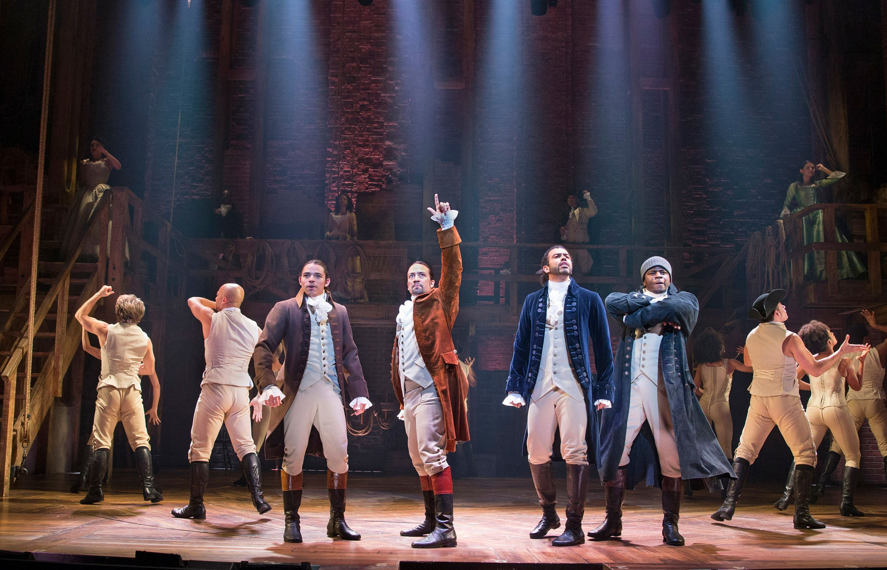

One of the reasons I like Hamilton so much is because of the songs that are played throughout the musical. It has a unique and memorable soundtrack. The soundtrack is broadway music mixed with modern sounds like rap and hip-hop. Instead of using long dialogue scenes, Hamilton tells most of the story through music, which keeps the show fast paced and engaging. Many of the songs help develop the characters and explain important moments in Alexander Hamiltons life. For example, the opening song Alexander Hamilton introduces the audience to Hamiltons difficult childhood and how he eventually makes his way to New York. Another powerful song is My Shot, where Hamilton expresses his ambition and determination to make a difference in the new nation.Other songs focus on relationships and emotional moments in the story. Helpless tells the story of how Hamilton and Eliza fall in love, while Burn reveals Elizas heartbreak after Hamiltons personal scandal becomes public. There are also energetic songs like Guns and Ships and the Battle of Yorktown that highlight the excitement and intensity of the Revolutionary War. Overall, the soundtrack of Hamilton plays a huge role in making the musical so memorable. Each song moves the story forward and helps the audience understand the characters motivations, emotions, and struggles.
